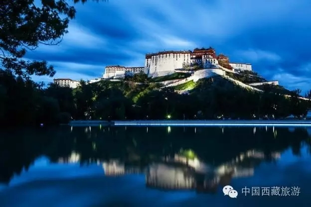
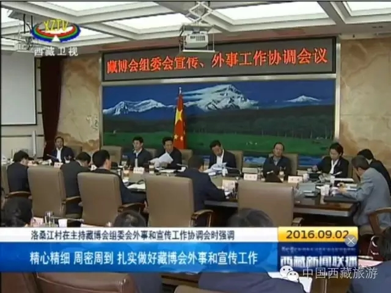
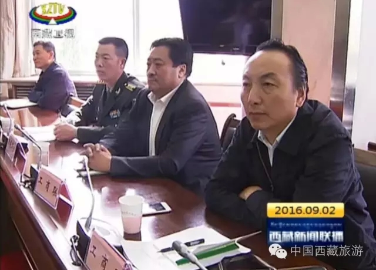

西藏日报

9月2日上午，区党委副书记、自治区主席、第三届藏博会组委会主任洛桑江村主持召开藏博会组委会外事和宣传工作协调会，强调要精心精细、周密周到，扎实做好藏博会外事和宣传工作。

区党委常委、自治区常务副主席丁业现，区党委常委、自治区副主席、区党委宣传部部长姜杰，自治区人大常委会副主任巨建华，自治区副主席德吉、边巴扎西、多吉次珠、何文浩、其美仁增、房灵敏、刘江、汪海洲出席。
会议听取了第三届藏博会组委会外事组外宾邀请、活动安排、接待服务、安全保卫等有关工作情况。洛桑江村指出，自治区党委、政府高度重视藏博会外事工作，在中央外办和外交部的大力支持下，各有关部门履职尽责，主动作为，积极配合，本届藏博会外宾规模大、级别高，外事工作取得了阶段性成果。洛桑江村强调，藏博会是一项重大涉藏外事活动，要牢固树立外事活动无小事的意识，高度重视，注重细节，精心准备，做到万无一失，确保顺利圆满完成藏博会外事工作各项任务。要切实加强领导，成立专班，明确责任，畅通联络，周密安排部署，全力以赴做好藏博会外事工作。要落实管理责任，按照“谁邀请、谁接待、谁负责”的原则，严格外事工作规矩，统一归口管理、统筹安排，主动汇报，及时沟通。要注重对外交往礼遇，细化接待方案，做好接待人员培训，融入藏民族待客之道，加强医疗、交通等保障，确保应邀外宾感受到国际化的接待水准，感受到西藏人民热情好客的良好精神面貌。要安排好活动，认真组织参加藏博会主体活动，精心安排参观内容，让外宾走进发展现场、来到寻常百姓家，多走走、多看看，切身领略西藏翻天覆地的巨大变化。

会议听取了第三届藏博会组委会宣传组记者邀请、宣传安排等有关工作情况，并审议了藏博会宣传片。
洛桑江村指出，自治区党委、政府高度重视藏博会对外宣传工作，在中宣部的大力支持下，各有关部门精心策划、精心组织，调动区内区外各级各类媒体力量聚焦藏博会，社会宣传氛围显现，对外宣传逐步升温，宣传工作取得了阶段性成果。洛桑江村强调，藏博会是对外宣传西藏的重要平台，要把藏博会宣传工作作为当前的一件大事，坚持主动发声，营造强大宣传声势，积极做好舆论引导，继续逐步升温，到藏博会开幕时掀起我区对外宣传新的高潮。藏博会宣传片要围绕“人间圣地·天上西藏”主题，贯穿思想性、艺术性、可观赏性，突出西藏唯一性、独一性的自然人文旅游文化资源，突出西藏的新发展新变化，精编精选，集中展现最美西藏，形成视觉冲击力和心灵震撼力。